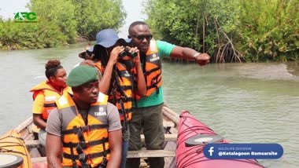

GHANA / CONSERVATION & MEDIA WORK
Stories from the field.
Designs for the message.
A collection of my campaign design, video and production work, bringing together conservation awareness, tourism storytelling and staff communication.


Film & field work
Location films, event coverage, social promotion and behind-the-scenes work.
Explore the story →